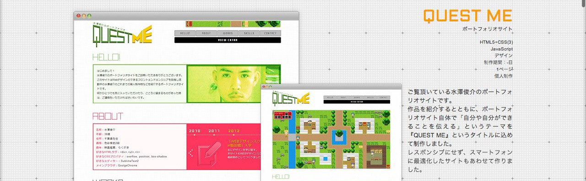

ご覧頂いている水澤俊介のポートフォリオサイトです。作品を紹介するとともに、ポートフォリオサイト自体で「自分や自分ができることを伝える」というテーマを『QUEST ME』というタイトルに込めて制作しました。 レスポンシブにせず、スマートフォンに最適化したサイトもあわせて作りました。
記事内スタイル一覧
h2ヘッダー見出しです
h3ヘッダー見出しです
h4ヘッダー見出しです
ご覧頂いている水澤俊介のポートフォリオサイトです。作品を紹介するとともに、ポートフォリオサイト自体で「自分や自分ができることを伝える」というテーマを『QUEST ME』というタイトルに込めて制作しました。 レスポンシブにせず、スマートフォンに最適化したサイトもあわせて作りました。
h5ヘッダー見出しです
ご覧頂いている水澤俊介のポートフォリオサイトです。作品を紹介するとともに、ポートフォリオサイト自体で「自分や自分ができることを伝える」というテーマを『QUEST ME』というタイトルに込めて制作しました。 レスポンシブにせず、スマートフォンに最適化したサイトもあわせて作りました。
・画像 : img要素

転換区切り
・リンクスタイル : a要素
記事内のテキストのリンクスタイルはこのような感じです。
- QUEST ME : http://mizzz.jp/questme/
- QUEST ME : http://mizzz.jp/questme/
- QUEST ME : http://mizzz.jp/questme/
・重要 : strong要素
記事内のテキストのハイライトはこのような感じです。
・引用(ブロック) : blockquote要素
・blockquote > p
引用ブロックのスタイルです。引用ブロックのスタイルです。引用ブロックのスタイルです。引用ブロックのスタイルです。引用ブロックのスタイルです。引用ブロックのスタイルです。引用ブロックのスタイルです。引用ブロックのスタイルです。引用ブロックのスタイルです。引用ブロックのスタイルです。
・引用(インライン) : q要素
引用インラインのスタイルは、こんな感じ
です。
引用元のリンクテキスト(cite要素)
・メモ
・class="memo"
メモ的な文章を明示するための文章を挿入するクラスです。
・注意
・class="alert"
注意を喚起するための文章を挿入するクラスです。
・追記
・class="ps"
追記の文章を挿入するクラスです。
・シンタックスハイライト(仮)
- <header id="global-header">
- <h1 id="siteLead">記事内スタイル一覧 / カテゴリー</h1>
- <p class="siteTitle" data-icon="!"><a href="index.html" class="siteTitle-inner"><span class="siteTitle-highlight">Please</span>Monolith</a></p>
- <nav id="global-nav">
- <ul>
- <li><a href="about.html">ABOUT</a></li>
- <li><a href="opuses.html">OPUS</a></li>
- <li><a href="blog.html">BLOG</a></li>
- <li><a href="contact.html">CONTACT</a></li>
- </ul>
- <!-- /global-nav --></nav>
- <nav id="breadcrumb-nav">
- <ul>
- <li><a href="index.html">TOP</a> > </li>
- <li><a href="blog.html">Blog</a> > </li>
- <li><strong>記事内スタイル一覧</strong></li>
- </ul>
- <!-- /global-nav --></nav>
- <!-- /global-header --></header>
h2ヘッダー見出しですh2ヘッダー見出しです
h3ヘッダー見出しです
ご覧頂いている水澤俊介のポートフォリオサイトです。作品を紹介するとともに、ポートフォリオサイト自体で「自分や自分ができることを伝える」というテーマを『QUEST ME』というタイトルに込めて制作しました。 レスポンシブにせず、スマートフォンに最適化したサイトもあわせて作りました。
ご覧頂いている水澤俊介のポートフォリオサイトです。作品を紹介するとともに、ポートフォリオサイト自体で「自分や自分ができることを伝える」というテーマを『QUEST ME』というタイトルに込めて制作しました。 レスポンシブにせず、スマートフォンに最適化したサイトもあわせて作りました。
h3ヘッダー見出しです
ご覧頂いている水澤俊介のポートフォリオサイトです。作品を紹介するとともに、ポートフォリオサイト自体で「自分や自分ができることを伝える」というテーマを『QUEST ME』というタイトルに込めて制作しました。 レスポンシブにせず、スマートフォンに最適化したサイトもあわせて作りました。
h2ヘッダー見出しですh2ヘッダー見出しですh2ヘッダー見出しですh2ヘッダー見出しですh2ヘッダー見出しです
h3ヘッダー見出しですh3ヘッダー見出しですh3ヘッダー見出しですh3ヘッダー見出しですh3ヘッダー見出しです
ご覧頂いている水澤俊介のポートフォリオサイトです。作品を紹介するとともに、ポートフォリオサイト自体で「自分や自分ができることを伝える」というテーマを『QUEST ME』というタイトルに込めて制作しました。 レスポンシブにせず、スマートフォンに最適化したサイトもあわせて作りました。
h3ヘッダー見出しです
ご覧頂いている水澤俊介のポートフォリオサイトです。作品を紹介するとともに、ポートフォリオサイト自体で「自分や自分ができることを伝える」というテーマを『QUEST ME』というタイトルに込めて制作しました。 レスポンシブにせず、スマートフォンに最適化したサイトもあわせて作りました。
h3ヘッダー見出しです
ご覧頂いている水澤俊介のポートフォリオサイトです。作品を紹介するとともに、ポートフォリオサイト自体で「自分や自分ができることを伝える」というテーマを『QUEST ME』というタイトルに込めて制作しました。 レスポンシブにせず、スマートフォンに最適化したサイトもあわせて作りました。